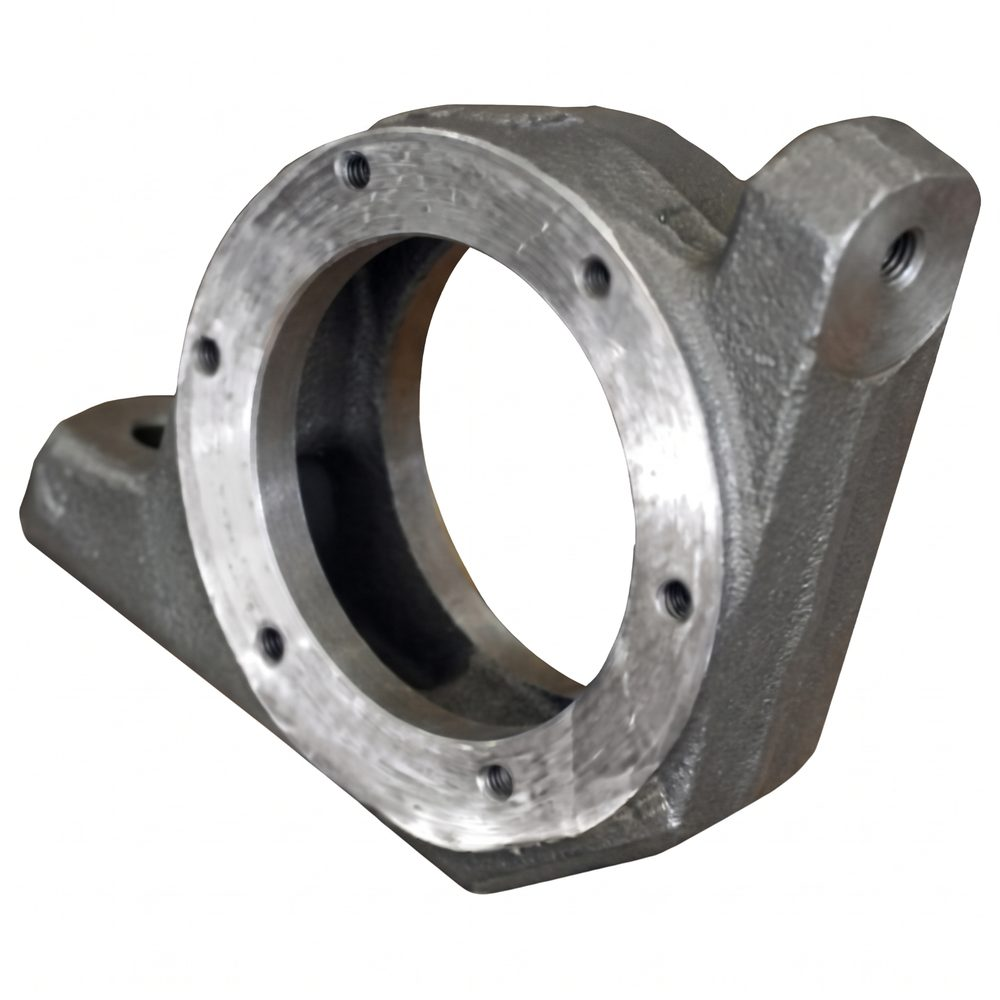
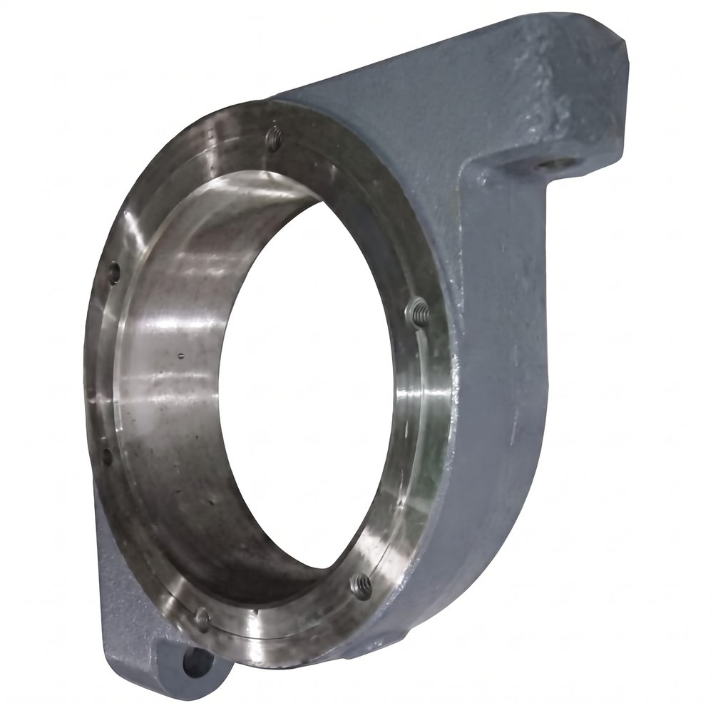
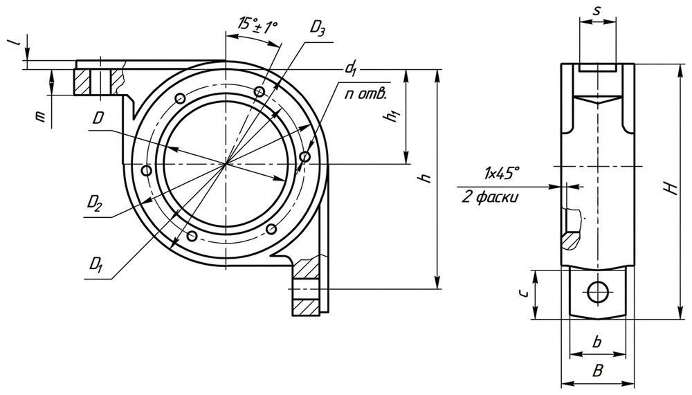
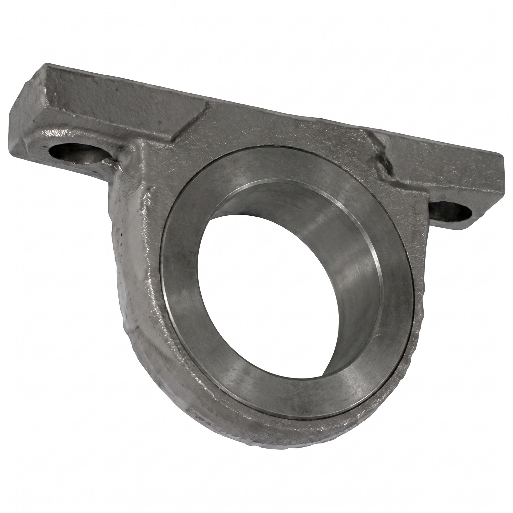
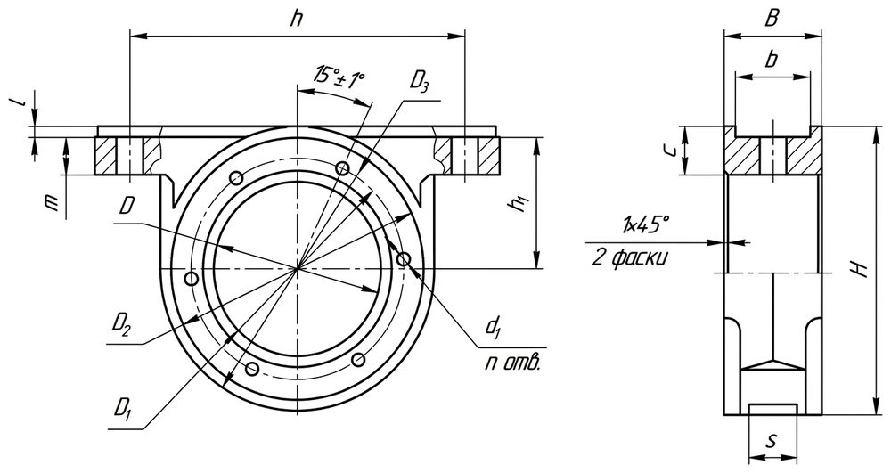

Позвонить: (4842) 75-75-05
Написать сообщение: m-40@inbox.ru
- Главная
- О компании
- Контакты
- Редукторы и мотор-редукторы
- Колеса крановые
- Блоки полиспаста
- Шкивы тормозные
- Муфты
- Крюки и крюковые подвески
- Грузовые барабаны
- Шлицевые детали
- Конические шестерни
- Цилиндрические шестерни
- Запасные части для козловых кранов
- Запасные части для портальных кранов
- Запасные части для башенных кранов
- Техническая информация
- Правовая информация
Колеса крановые → Буксы крановые
- Главная
- О компании
- Контакты
- Редукторы и мотор-редукторы
- Колеса крановые
- Блоки полиспаста
- Шкивы тормозные
- Муфты
- Крюки и крюковые подвески
- Грузовые барабаны
- Конические шестерни
- Цилиндрические шестерни
- Шлицевые детали
- Запасные части для козловых кранов
- Запасные части для портальных кранов
- Запасные части для башенных кранов
- Техническая информация
- Правовая информация

Крановая букса служит для присоединения кранового колеса к металлоконструкции крана.
Конструктивно крановая букса состоит из металлического корпуса (из чугуна либо стали) с установленным в нем подшипником качения, крышек, пресс-масленки и смазочного материала.
Крановые буксы, как правило, выполняются с подшипниками качения, т.к. они наиболее эффективны при небольшой скорости передвижения, значительных нагрузках
и высоких требования к надежности и износостойкости.
Букса дополняется крышками: глухими или проходными - с отверстием под выхода вала.
Зазор между валом и отверстием в проходной крышке герметизируется с помощью сальниковой набивки или манжет.
Крышки крепятся с помощью болтов и гаек через сквозные отверстия в теле буксы. Внутрь буксы закладывается смазка для снижения трения при работе подшипника.
Буксы могут изготавливаться из штампованной или литой заготовки, а также из листового металлопроката соответствующей толщины. Допускается изготовление сварных крановых букс.
Размеры букс, их вид, крепление к раме крана, диаметр отверстий могут отличаться и зависят от конструктивных особенностей крана.
|
 |
 |
||||
| Рисунок 1. Внешний вид и чертеж букс крановых угловых | |||||
ООО «ЦКК» имеет возможность изготовления нестандартных букс любого типоразмера. Изготавливаем прямые буксы
для ходовых тележек, вагонеток и других механизмов, перемещающихся по рельсам.
|
 |
 |
||||
| Рисунок 2. Внешний вид и чертеж букс крановых прямых | |||||
В качестве прямых букс могут применяться корпуса подшипников,
изготовленные методом литья из чугуна или стали.
Основные размеры букс крановых угловых
Тип
Тип кранового колеса
D
B
b
H
h
Масса, кг, не более
БУ 100
К2Р 200×60СБ
100
45
38
170
150
3,3
К2Р 250×70СБ
БУ 110
К2Р 200×60СБ
110
50
40
200
175
5,0
К2Р 250×70СБ
БУ 130
К2Р 320×70СБ
130
56
46
230
200
8,5
К2Р 320×80СБ
БУ 190
К2Р 400×80СБ
190
74
66
300
270
14,5
К2Р 400×90СБ
К2Р 400×100СБ
БУ 240
К2Р 500×90СБ
240
90
80
365
330
33,0
К2Р 500×100СБ
БУ 260
К2Р 560×90СБ
260
100
80
385
350
38,0
К2Р 560×100СБ
К2Р 560×130СБ
К2Р 600×90СБ
К2Р 600×100СБ
БУ 280
К2Р 600×90СБ
280
105
85
440
400
48,0
К2Р 600×100СБ
К2Р 630×100СБ
К2Р 630×130СБ
К2Р 700×100СБ
К2Р 700×110СБ
К2Р 700×130СБ
К2Р 700×150СБ
К2Р 710×100СБ
К2Р 710×110СБ
К2Р 710×130СБ
К2Р 710×150СБ
БУ 320
К2Р 800×110СБ
320
120
100
500
460
80,0
К2Р 800×130СБ
К2Р 800×150СБ
К2Р 800×170СБ
БУ 360
К2Р 900×130СБ
360
130
110
560
505
95,0
К2Р 900×150СБ
К2Р 900×170СБ
БУ 380
К2Р 1000×170СБ
380
145
125
585
530
110,0
Основные требования, предъявляемые к буксам:
- Обеспечение надежности, безотказности и долговечности работы в экстремальных условиях эксплуатации в
течение установленного срока службы;
- Простота выполнения операций по монтажу и демонтажу буксовых узлов при ремонте;
- Надежная герметизация буксового узла от попадания пыли и влаги;
- Обеспечение взаимозаменяемости и унификации деталей и др.
Буксы проектируют так, чтобы равнодействующая нагрузка проходила через середину шейки оси. Благодаря этому не возникает дополнительных напряжений
в расчетных сечениях оси.
Буксы удерживаются от смещения при движении благодаря специальной конструкции - специальных платиков, приваренных к металлоконструкции или балансиру.
Они позволяют надежно закреплять буксы на раме крана. Это позволяет свести к минимуму время на замену букс и их точную установку.
ООО «ЦКК» производит буксы крановые в прямом и угловом исполнении. Буксы прямые (типа БП)
исполняются из литых чугунных заготовок. Имеем возможность изготовления нестандартных сварных букс и букс выполняемых из листового металла, по чертежам заказчика.
Узнать цены на буксы Вы можете здесь либо по телефону:
(4842) 75-75-05
Основные размеры букс крановых угловых
| Тип | Тип кранового колеса | D | B | b | H | h | Масса, кг, не более |
| БУ 100 | К2Р 200×60СБ | 100 | 45 | 38 | 170 | 150 | 3,3 |
| К2Р 250×70СБ | |||||||
| БУ 110 | К2Р 200×60СБ | 110 | 50 | 40 | 200 | 175 | 5,0 |
| К2Р 250×70СБ | |||||||
| БУ 130 | К2Р 320×70СБ | 130 | 56 | 46 | 230 | 200 | 8,5 |
| К2Р 320×80СБ | |||||||
| БУ 190 | К2Р 400×80СБ | 190 | 74 | 66 | 300 | 270 | 14,5 |
| К2Р 400×90СБ | |||||||
| К2Р 400×100СБ | |||||||
| БУ 240 | К2Р 500×90СБ | 240 | 90 | 80 | 365 | 330 | 33,0 |
| К2Р 500×100СБ | |||||||
| БУ 260 | К2Р 560×90СБ | 260 | 100 | 80 | 385 | 350 | 38,0 |
| К2Р 560×100СБ | |||||||
| К2Р 560×130СБ | |||||||
| К2Р 600×90СБ | |||||||
| К2Р 600×100СБ | |||||||
| БУ 280 | К2Р 600×90СБ | 280 | 105 | 85 | 440 | 400 | 48,0 |
| К2Р 600×100СБ | |||||||
| К2Р 630×100СБ | |||||||
| К2Р 630×130СБ | |||||||
| К2Р 700×100СБ | |||||||
| К2Р 700×110СБ | |||||||
| К2Р 700×130СБ | |||||||
| К2Р 700×150СБ | |||||||
| К2Р 710×100СБ | |||||||
| К2Р 710×110СБ | |||||||
| К2Р 710×130СБ | |||||||
| К2Р 710×150СБ | |||||||
| БУ 320 | К2Р 800×110СБ | 320 | 120 | 100 | 500 | 460 | 80,0 |
| К2Р 800×130СБ | |||||||
| К2Р 800×150СБ | |||||||
| К2Р 800×170СБ | |||||||
| БУ 360 | К2Р 900×130СБ | 360 | 130 | 110 | 560 | 505 | 95,0 |
| К2Р 900×150СБ | |||||||
| К2Р 900×170СБ | |||||||
| БУ 380 | К2Р 1000×170СБ | 380 | 145 | 125 | 585 | 530 | 110,0 |
- Обеспечение надежности, безотказности и долговечности работы в экстремальных условиях эксплуатации в
течение установленного срока службы;
- Простота выполнения операций по монтажу и демонтажу буксовых узлов при ремонте;
- Надежная герметизация буксового узла от попадания пыли и влаги;
- Обеспечение взаимозаменяемости и унификации деталей и др.
Буксы проектируют так, чтобы равнодействующая нагрузка проходила через середину шейки оси. Благодаря этому не возникает дополнительных напряжений
в расчетных сечениях оси.
Буксы удерживаются от смещения при движении благодаря специальной конструкции - специальных платиков, приваренных к металлоконструкции или балансиру.
Они позволяют надежно закреплять буксы на раме крана. Это позволяет свести к минимуму время на замену букс и их точную установку.
ООО «ЦКК» производит буксы крановые в прямом и угловом исполнении. Буксы прямые (типа БП)
исполняются из литых чугунных заготовок. Имеем возможность изготовления нестандартных сварных букс и букс выполняемых из листового металла, по чертежам заказчика.
Узнать цены на буксы Вы можете здесь либо по телефону:
(4842) 75-75-05
ЦКК
Центр крановых компонентов
г. Калуга, ул. Комсомольская роща, д. 39
© 2026 ООО «Центр Крановых Компонентов»
ИНН 4000026221 · КПП 400001001